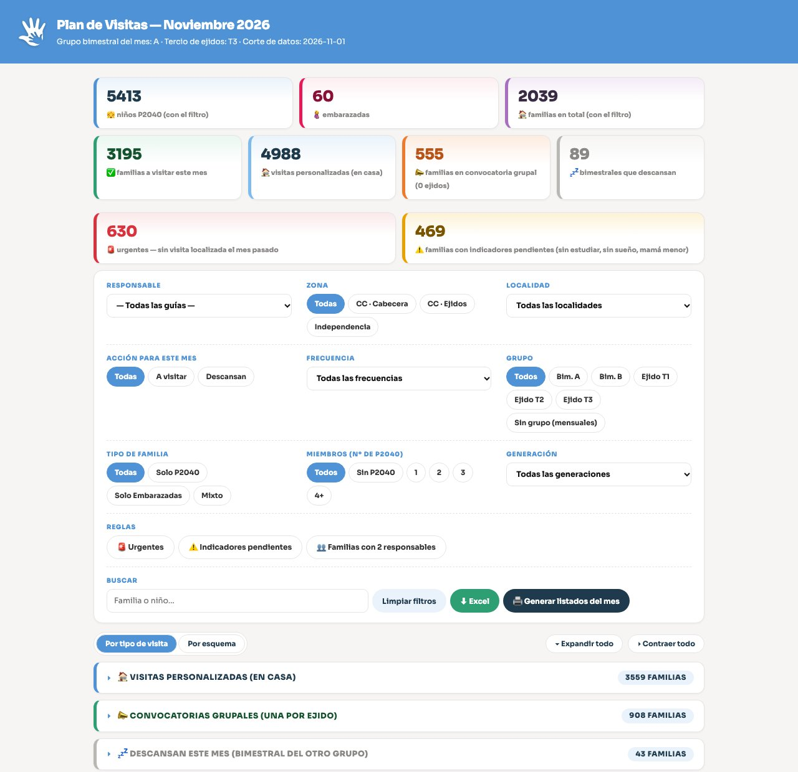

A quién le toca visita cada mes, de qué tipo y con qué guía: cómo se decide el esquema de cada familia y cómo usar los filtros, las listas y el historial.
🔒 Las capturas de este manual usan números de ejemplo: sirven para ubicar cada parte del reporte, no son los datos reales. Los datos reales solo se ven dentro del reporte, con tu sesión institucional.
1¿Para qué sirve?
Es el plan operativo del mes: a qué familias le toca visita, de qué tipo y con qué guía, y cuáles descansan. Hay un plan por mes (en el portal están los más recientes). Sirve a cada guía para organizar su mes y a coordinación para ver la carga de trabajo.
Se arma al inicio del mes con los datos del CRM; la fecha está en el encabezado («Corte de datos»).
2Cada cuándo se visita a cada familia
Frecuencia
A quién aplica
Cómo se visita
Mensual
Familias con niños pequeños (menores de 7 años) o recién integrados.
Visita personalizada en casa, todos los meses.
Bimestral
Familias cuyos niños P2040 tienen todos 7 años o más y ya tienen antigüedad en el Plan.
Un mes sí y otro no, según su grupo: A o B. El encabezado dice qué grupo toca este mes.
Ejido regular
Ejidos con más de 15 niños P2040.
Una convocatoria grupal en la localidad y, además, visitas en casa para las familias del tercio que toca (T1, T2 o T3).
Mensual (ejido baja población)
Ejidos con 15 niños P2040 o menos.
Visita personalizada en casa, todos los meses.
Mensual (embarazada sin P2040)
Mamás embarazadas sin niños P2040.
Acompañamiento en casa, todos los meses.
💡 «Descansan» no es un pendiente: son familias bimestrales del otro grupo, a las que este mes no les toca visita.
3Cómo moverte en el plan

El encabezado, los números del mes y los filtros. Captura con números de ejemplo.
Responsable, Zona y Localidad: elige una guía, Cuatro Ciénegas cabecera, Cuatro Ciénegas ejidos o Independencia, y una localidad.
Acción para este mes: todas, solo las que se visitan o solo las que descansan.
Frecuencia y Grupo: filtra por esquema (bimestral A/B, tercios de ejido T1–T3 o mensuales).
Tipo de familia, Miembros y Generación: familias con P2040, solo con embarazadas o mixtas; cuántos niños P2040 tiene la familia; y su generación.
Reglas: actívalas para ver solo las familias 🚨 urgentes, con ⚠️ indicadores pendientes o 👥 con dos responsables.
Buscar por familia o niño, y Limpiar filtros para volver a todo.
4Los números de arriba
Número
Qué es
Niños P2040 · embarazadas · familias
Cuántos hay con los filtros que tengas puestos.
✅ Familias a visitar
Las que tienen al menos una visita programada este mes.
🏠 Visitas personalizadas
Las visitas en casa del mes.
📣 Convocatoria grupal
Familias de ejido que se citan en grupo, y en cuántos ejidos.
💤 Descansan
Bimestrales del otro grupo, sin visita este mes.
🚨 Urgentes
Familias en las que ningún miembro tuvo visita localizada el mes pasado.
⚠️ Indicadores pendientes
Familias con algún pendiente: niños sin estudiar, sin sueño registrado o mamá menor de edad.
5Las familias
Abajo, las familias se agrupan por tipo de visita (personalizadas en casa, convocatorias grupales y las que descansan) o por esquema. Expandir todo / Contraer todo abre o cierra los grupos.
Cada familia muestra su guía, cuántos niños P2040 tiene, sus marcas (urgente, bimestral, pendientes) y, al abrirla, su ubicación, los motivos de su esquema y los pendientes.
Si la familia tiene niños de dos guías, el plan la asigna a una sola y lo indica con 👥.
6Listas, Excel e historial
🖨 Generar listados del mes abre las hojas imprimibles por guía con el mismo plan, sin tener que subir ninguna base.
⬇ Excel descarga las familias con los filtros que tengas.
📋 Ver historial de visitas, en cada familia, muestra sus visitas de meses anteriores: fecha, tipo, guía y si se localizó.
🔒 El plan, el Excel y las listas traen nombres y direcciones de las familias: úsalos solo dentro del equipo.
7Preguntas frecuentes
Una familia que se visitó el mes pasado sale como urgente, ¿por qué?
Urgente quiere decir que ningún miembro tuvo una visita localizada. Si la visita fue «no localizada», o se capturó después del corte, la familia sigue como urgente.
¿Puedo visitar a una familia que descansa?
Sí, pero no cuenta en los indicadores del mes: los bimestrales que no tocaban quedan fuera de la base de Visitas del Reporte Mensual y de los KPIs de Guías.
¿Por qué hay planes de varios meses en el portal?
Para consultar lo que se planeó en meses anteriores. El que se trabaja es el del mes en curso.